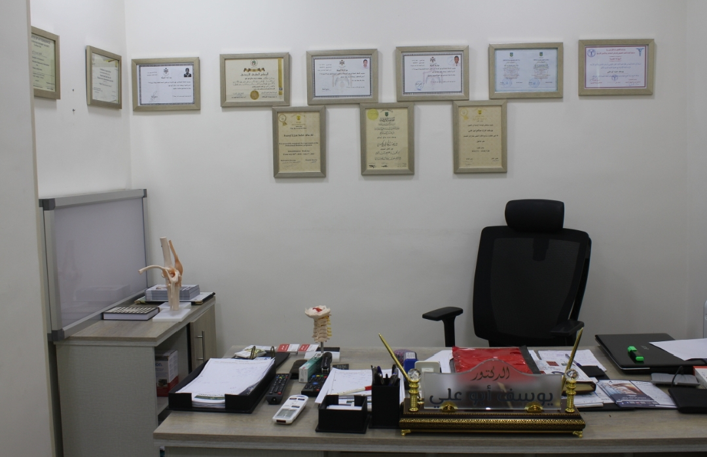
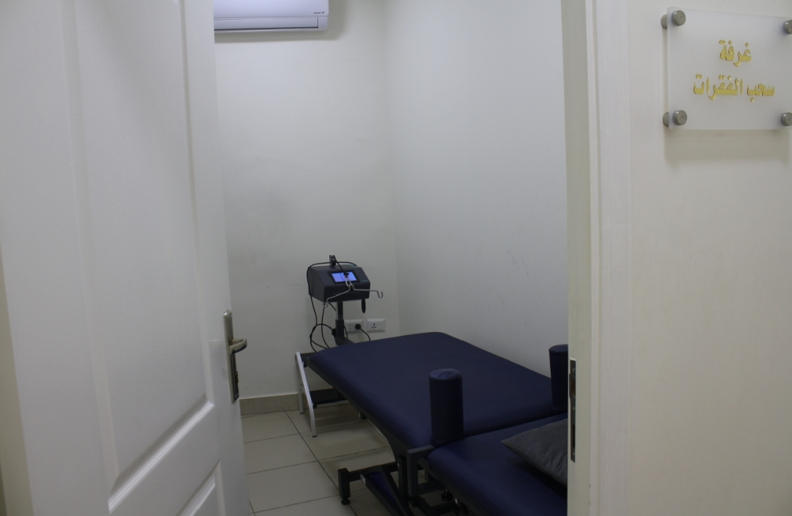
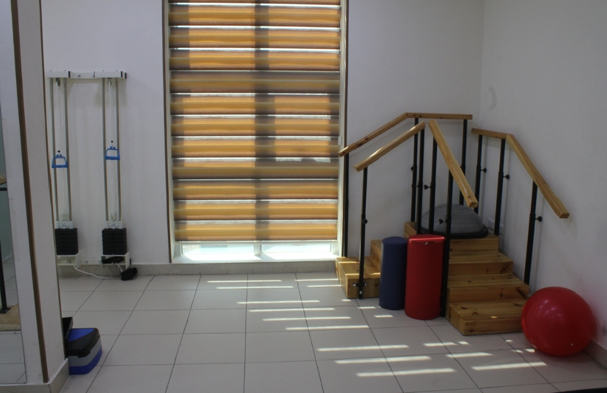

Sigma
مركز الدكتور يوسف أبو علي
هو وجهتك الأولى إن كنت تعاني من آلام في العمود الفقري أو المفاصل، أو آلام العضلات المزمنة التي تتداخل في حياتك اليومية. نحن ببساطة مركز متخصص في تأهيل وعلاج حالات الأعصاب والمفاصل والعضلات بطرق غير جراحية وفق خطة مدروسة علمية محكمة.
صور المركز


